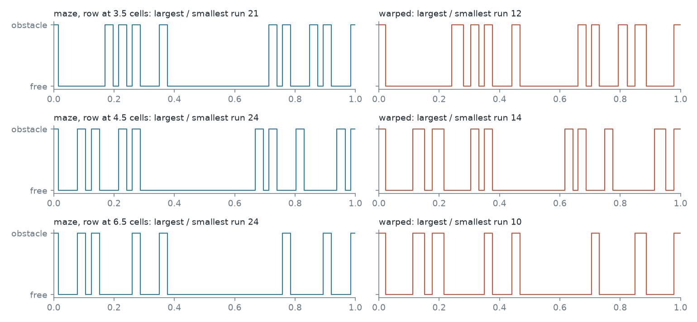
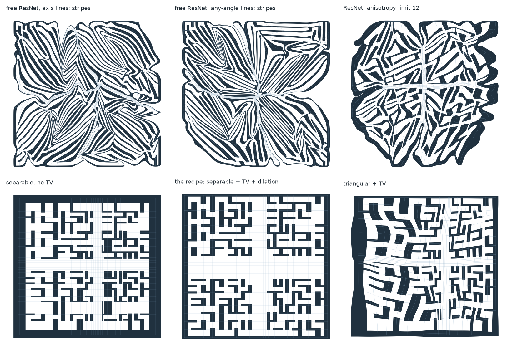
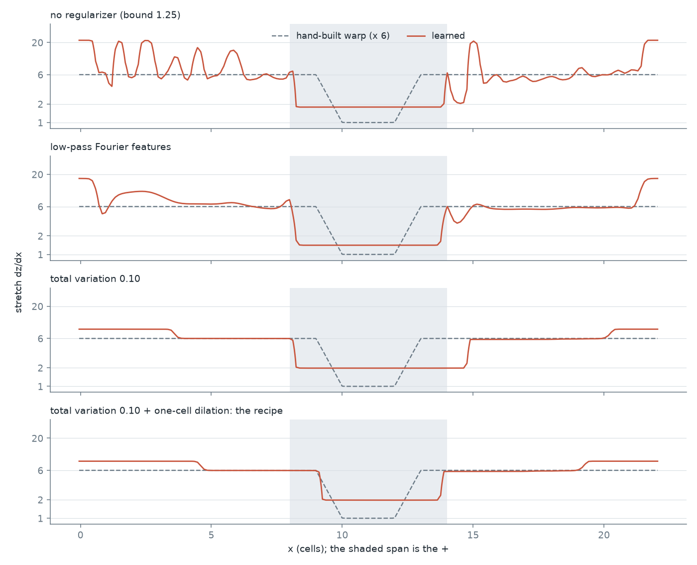
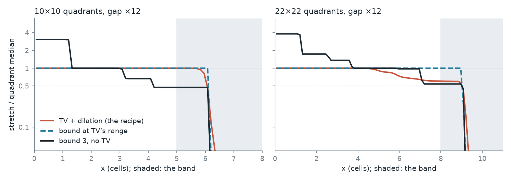
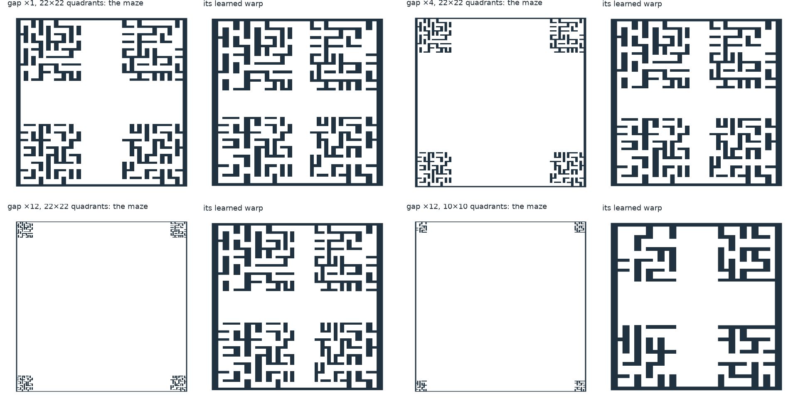
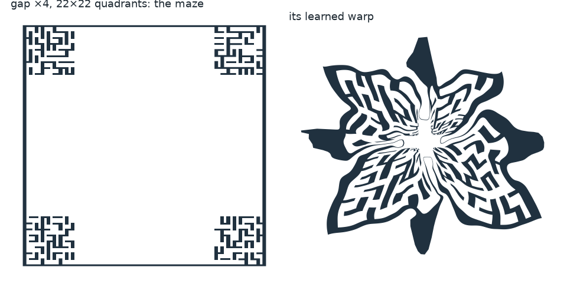

You proposed a Fourier network that learns a diffeomorphism from one rule: along any line in the warped space, the free and obstacle runs should be the same length. It works, under three conditions. Fitted to the obstacles alone, the warp at the widest gap (×12) solves 93.3 % of runs on the 10×10 quadrants and 63.2 % on the 22×22 quadrants. ntrl-demo gets 26.7 and 24.2 %. The hand-built warp gets 85.1 and 58.0 %, or 92.2 and 63.4 % with its band also shrunk by hand, so the learned warp finds that shrinking without being told where the band is. On the plain plus maze it is 13 points above ntrl-demo, about level with a uniform stretch, and 2.6 below the hand-built warp. The map has to be limited, because left free the loss makes zebra stripes that the field cannot learn. Its density needs a total variation penalty. And at wide gaps the field has to be trained on the warped maze. The value of the loss does not predict planning (r = −0.08). How well the field learns the warped maze does.
Take a warp z = φ(x) and any line in z. Each point on the line is free (0) or obstacle (1), so the line gives a step function, and the steps are runs of lengths ℓ₁ … ℓᵣ. The loss is the difference between the longest and the shortest run, in units of that line’s mean run:
Each row below is one line through the plus maze. On the left, in the maze, the + is a single huge free run. On the right, after the warp, it is still the longest run, but the ratio of the largest to the smallest has about halved.

How it is computed. Nothing has to be inverted or smoothed. The breakpoints of the step function are where the line crosses the image of the obstacle boundary, so the boundary polylines go through φ once and are intersected with the line. Each crossing is a closed-form function of φ’s output, so the gradient is exact: it matches finite differences to 3 × 10⁻⁸. The one exception is on purpose: a crossing where the line runs nearly parallel to the boundary keeps its position but drops its gradient. Obstacle space is the robot’s C-space obstacle at 9 headings, as exact polygons. They agreed with the maze’s clearance function at every one of 200,000 random positions at each of 4 headings, outside a shell of 0.001 cells around the boundary.
φ is fitted first, from the geometry alone, in about a minute. It is then frozen and ntrl-demo trains through it unchanged. The network, loss and planner are the earlier studies’.
A free Fourier ResNet lowers the loss by turning the maze into stripes of nearly one wavelength. The largest / smallest run falls from 26 to 11, lower than any map that plans well, but planning drops to 23–48 %, against 68 % with no warp at all. That range covers five fields: axis and any-angle lines, quadrant stretch 4 and 6, and a rerun on the final code.

Why stripes win the loss. Runs are compared only within a line. A line that runs along a stripe holds one long run, has nothing to compare, and costs nothing, while a line across the stripes sees a single wavelength. So stretching walls into long thin stripes is nearly free. It takes singular values from 0.014 to 41.
The stripes are a stubborn attractor. They survived lines at any angle, a comparison of runs across lines, and a shear penalty that took the rotation from 24° to 1° (the stripes just lined up with an axis). A free triangular map found them too. Only a limit on the map itself removed them.
Why they plan badly: the field cannot learn the maze through them. Trained through the stripes, the field’s speed correlates with the true speed at only 0.27–0.40, against 0.78 for the recipe. At a wall it predicts a speed of 0.49–0.64, where the recipe’s field predicts 0.14, and a long path has 6–16 local minima against 0.2. Training on the warped maze does not rescue it: the correlation, measured in z, is 0.14 against 0.70, descent leads into the wall at 42 % of slow-zone poses against 6 %, and 4.9 % of runs succeed against 60.8 %.
A lower loss is not a better map. The first chart is the loss against planning on the plus maze: no relation across 14 fits (r = −0.08). The second is what the field learned, over 30 fields including the controls: the more local minima along long paths, the fewer runs solved (r = −0.94, or −0.78 within the 17 separable fields). Speed agrees (r = +0.89 with the correlation between learned and true log speed), and so does the direction of descent (r = +0.93). Fields trained on the warped maze show the same with speed measured in z: r = +0.99 over 7 fields at ×1, and +0.89 and +0.96 over the fits at ×12 on the two mazes. The loss asks for even runs. Planning needs a maze the field can learn. Those are different goals, and the rest of the work was closing the difference.
Four changes, each from a measured failure.

1. Limit the map. A separable map (F(x), G(y)), or a triangular one, cannot shear far, and its Jacobian is positive by construction, so it cannot fold. Its log-density is the Fourier network. This removes the stripes.
2. Penalize the total variation of the log-density. The loss needs the log-density to fall from a quadrant level to a band level. Any range beyond that is slack, and the fit spends slack on spikes and tilts that the loss does not charge for (top panel). Total variation charges for every rise and fall, so only the two levels the loss pays for remain. A plain bound can do the same job, but only when it is tight (second chart): 82.1 % at 0.70 and 65.0 % at 2.00, three seeds each. The loose bounds lose runs to stalls, not to walls.
The reason to prefer total variation is that it finds the level by itself. With one weight, 0.1, the log-density range grows with the gap: 1.30 / 2.00 / 2.73 / 3.33 / 3.75 at ×1 / ×2 / ×4 / ×8 / ×12 on the 22×22 quadrants and 1.29 / 2.03 / 2.71 / 3.22 / 3.55 on the 10×10 quadrants, with about two steps per axis every time. A bound does not adapt like that. On the plus maze the weight hardly matters above 0.05, because the shape of the map hardly matters there: at 0.40 the map is almost uniform (band / quadrant 1.00) and still solves 80.7 %.
With the loss in x, slack hurts through the field’s slope. That slope in z is (1/S)/F′, so every wiggle in F′ becomes a wiggle in the field: bound 1.25 has 1.16 local minima per long path against 0.14 with total variation, and 234 of 720 runs never arrive while only 13 hit a wall. A field trained on the warped maze has no such term, and it fails differently (next section).
3. Draw lines through the boundary. Total variation is an L1 penalty, so at the identity it can absorb a weak gradient completely. On the emptiest maze (10×10 quadrants, ×12) lines drawn uniformly rarely met a wall, and the map never moved: a run that looked like a failure of the method (9.8 %) was just a uniform stretch. Lines through random boundary points always have runs to compare, and that fixed it. Starting the penalty late did not, because wiggles that form early stay. A fit that does not move now stops with an error.
4. Do not compress next to a wall. The loss treats a free run as one thing, so compression runs right up to the wall. A dilation of the log-density by one cell moves it away. At ×12 this takes total variation alone from 86.4 and 53.6 % to 93.3 and 63.2 % (10×10 and 22×22 quadrants), with no overlap between seeds. Without it, on the 22×22 quadrants the wall’s slow zone on the band side is 0.0024 z-units wide, 3 % of its width inside a quadrant and 7 × smaller than one planner step. With it, the zone is 0.0352 wide, twice a step. Queries that must cross that wall gain most (quadrant to open: 51 → 78 %, one seed). Widths of 0 / 0.5 / 1 / 2 cells gave 52.0 / 56.0 / 63.4 / 59.1 % on one seed, so about a cell, within noise.
Also: use the C-space obstacle. With workspace walls as the obstacle the warp compresses too wide a span (x ≈ 6–17 and y ≈ 5–15, where the band is 8–14). A field through that warp solves 65.3 % of the plus maze on one seed. The same seed gets 77.5 % with the C-space obstacle.
Tried and dropped. A third level on the step function (a contour one cell inside free space, so that a wide run splits into edge zones and an interior) did not produce the same effect: the density shows no step inside the band, because a 1-cell edge zone is already longer than a typical run. Fit seeds do not matter: band / quadrant stretch 0.34, 0.33, 0.34 over 3 fit seeds.
Each part taken away in turn, with three training seeds. The green row is a control: total variation replaced by a plain bound, set at the range total variation reached on that maze (1.775 and 1.875 at ×12, with dilation; 0.70 on the plus maze, without).
At ×12 total variation is worth +37.1 and +17.5 points on top of dilation, and dilation +6.9 and +9.7 on top of total variation. On the plus maze total variation is again the part that matters: without it the field solves 58.1 % of the held-out queries, below ntrl-demo’s 64.6.
The control shows what total variation is doing. A plain bound at the same range plans about as well (91.6 and 60.9 %, against 93.3 and 63.2 %), so the penalty’s effect here is the range it sets. The chart sweeps that bound at ×12, at 0.70 / 1.25 / total variation’s range / 2.5 / 3: 51.7 / 82.1 / 91.6 / 80.8 / 56.3 % on the 10×10 quadrants and 26.1 / 57.4 / 60.9 / 62.6 / 45.7 % on the 22×22. So at one gap a bound has a window about a factor of two wide, and the log-density starts to tilt past its top end. None of the bounds I tried serves both ends: at ×1, trained on the warped maze and without dilation, 1.25 gets 45.7 % and 0.70 gets 56.7 %, against 60.4 % with total variation, and 0.70 is far too tight at ×12. I did not try values between the two. One total variation weight served every gap and both mazes, with no knowledge of the band.
How each one fails. The success rate hides two opposite mistakes.
Too little range: runs stall. With a bound of 0.70 the band stays wide (band / quadrant 0.25), the box in z is about twice the recipe’s, and 42 and 63 % of runs never arrive (10×10 and 22×22 quadrants). This is the wide band that broke ntrl-demo in the gap study.
Too much range: runs walk into walls. With a bound of 3 and no total variation the density uses its slack to tilt across each quadrant (figure): it moves by 1.94 and 1.06 in log-density, against 0.07 and 0.26 for the recipe. The map is scaled so the quadrant’s median stretch is m, so much of a quadrant sits well below m, and that is where runs hit walls: the median contact is at 0.62 and 0.68 m, against 1.00 and 0.84 m for the recipe.

There the wall’s slow zone is thin: under two planner steps at 41 and 12 % of near-wall poses inside the quadrants, and at none of them for the recipe. (I chose two steps after seeing this. One step, which I tried first, missed it.) A thin zone costs twice.
The same happens next to the band without dilation, which is why dilation removes contacts outside the quadrants (24 → 4 on the 10×10 quadrants and 41 → 15 on the 22×22, one seed).
The 10×10 fit with neither part went wrong in its own way: it barely compressed (band / quadrant 0.31), its box in z is 5.6 × the recipe’s, and its field did not learn the maze (speed correlation 0.32 in z). The 22×22 quadrants still lose runs after all of this: 23 % of arrivals hit a wall, mostly inside a quadrant.
| fit | solved (%) per seed | walked into a wall (of 900) | never arrived (of 900) | log-density range | tilt in a quadrant | band / quadrant | box in z | slow zone under 2 steps, quadrant (%) | same, outside (%) | speed correlation in z | descent into the wall (%) |
|---|---|---|---|---|---|---|---|---|---|---|---|
| 10×10 quadrants, TV + dilation | 95.2 / 91.3 / 93.4 | 24 / 20 / 30 | 19 / 58 / 29 | 3.55 | 0.07 | 0.027 | 3.75 | 0.0 | 0.0 | 0.89 | 0.8 |
| 10×10 quadrants, TV only | 88.2 / 84.4 / 86.6 | 100 / 123 / 105 | 6 / 17 / 16 | 3.54 | 0.14 | 0.029 | 3.31 | 0.0 | 8.6 | 0.88 | 1.0 |
| 10×10 quadrants, dilation only (bound 3) | 55.4 / 58.0 / 55.3 | 363 / 306 / 361 | 38 / 72 / 41 | 6.00 | 1.94 | 0.008 | 4.47 | 41.0 | 8.7 | 0.86 | 3.5 |
| 10×10 quadrants, neither (bound 3) | 14.1 / 15.4 / 24.7 | 96 / 99 / 142 | 677 / 662 / 536 | 6.00 | 2.88 | 0.307 | 21.20 | 40.5 | 56.3 | 0.32 | 28.4 |
| 10×10 quadrants, bound 0.70 + dilation | 51.7 | 59 | 376 | 1.40 | 0.00 | 0.247 | 8.08 | 0.0 | 0.0 | 0.76 | 1.9 |
| 10×10 quadrants, bound 1.25 + dilation | 82.1 | 59 | 102 | 2.50 | 0.00 | 0.082 | 4.92 | 0.0 | 0.0 | 0.84 | 0.9 |
| 10×10 quadrants, bound at TV’s range + dilation | 95.1 / 89.1 / 90.6 | 12 / 20 / 47 | 32 / 78 / 38 | 3.55 | 0.00 | 0.029 | 3.86 | 0.0 | 0.0 | 0.89 | 0.8 |
| 10×10 quadrants, bound 2.5 + dilation | 80.8 | 160 | 13 | 5.00 | 0.64 | 0.014 | 3.67 | 28.3 | 2.9 | 0.89 | 1.1 |
| 22×22 quadrants, TV + dilation | 63.4 / 59.3 / 66.9 | 166 / 192 / 158 | 163 / 174 / 140 | 3.75 | 0.26 | 0.022 | 5.12 | 0.0 | 2.2 | 0.74 | 2.9 |
| 22×22 quadrants, TV only | 52.0 / 54.6 / 54.1 | 275 / 185 / 240 | 157 / 224 / 173 | 3.76 | 0.82 | 0.030 | 5.27 | 2.0 | 10.8 | 0.74 | 5.3 |
| 22×22 quadrants, dilation only (bound 3) | 45.4 / 45.6 / 46.1 | 220 / 211 / 302 | 271 / 279 / 183 | 6.00 | 1.06 | 0.008 | 5.84 | 12.4 | 5.3 | 0.68 | 6.5 |
| 22×22 quadrants, neither (bound 3) | 41.1 / 42.7 / 43.7 | 225 / 179 / 224 | 305 / 337 / 283 | 6.00 | 1.34 | 0.004 | 4.51 | 19.5 | 9.1 | 0.68 | 9.5 |
| 22×22 quadrants, bound 0.70 + dilation | 26.1 | 96 | 569 | 1.40 | 0.00 | 0.247 | 9.68 | 0.0 | 0.0 | 0.59 | 6.0 |
| 22×22 quadrants, bound 1.25 + dilation | 57.4 | 125 | 258 | 2.50 | 0.00 | 0.082 | 6.42 | 0.0 | 0.7 | 0.73 | 2.4 |
| 22×22 quadrants, bound at TV’s range + dilation | 59.0 / 59.2 / 64.6 | 103 / 102 / 126 | 266 / 265 / 193 | 3.75 | 0.00 | 0.024 | 5.28 | 0.0 | 2.2 | 0.76 | 2.8 |
| 22×22 quadrants, bound 2.5 + dilation | 62.6 | 131 | 206 | 5.00 | 0.10 | 0.007 | 5.06 | 2.7 | 0.2 | 0.79 | 2.5 |
Fields trained through the frozen warp at the same quadrant stretch as the hand-built warp (× 6), with the loss in x, on ntrl-demo’s own pairs and MPPI. The bars span the three training seeds. I chose the settings on the 240 queries, so the 1,200 are the fair comparison.
The learned warp is a clear gain over ntrl-demo (64.6 → 77.5 % held out), and no better than the simpler choices. Uniform B×4 gets 75.1, the earlier learned warp 74.9, and the hand-built warp is still ahead at 80.1. Most of the gain here is the stretch itself: the band is only a quarter of the width, so there is little to compress. On the gap study’s harder ×1 query set the same fields solve 63.4 %, against 64.5 % for the hand-built warp.
A tight bound is level with total variation on this maze (82.1 and 74.1 % at 0.70, against 79.6 and 77.5 % for the recipe), because here it sets almost the same range (1.40 against 1.30). The two query sets rank them differently, so I would not separate them. Dilation’s effect is small here and not settled: 74.9 → 77.5 % on the 1,200 queries (all three seeds up, 304 queries gained, 210 lost) but 79.5 → 79.6 % on the 240. Trained on the warped maze at ×1 it changes nothing (60.4 → 60.4 %). Its effect grows with the compression, which is why it shows at ×12.
| field | runs solved per seed (of 720) | % | arrived through a wall | never arrived | local minima per long path |
|---|---|---|---|---|---|
| control: ntrl-demo | 505 / 479 / 486 | 68.1 | 351 | 339 | 0.56 |
| control: uniform B x 4 | 616 / 600 / 535 | 81.1 | 280 | 129 | 0.10 |
| control: constructed x 6 (pm6) | 580 / 619 / 627 | 84.5 | 89 | 245 | 0.17 |
| control: earlier learned warp (la6b) | 591 / 522 / 596 | 79.1 | 96 | 355 | 0.32 |
| free ResNet, axis lines, s 6 | 177 | 24.6 | 33 | 510 | 12.57 |
| free ResNet, axis lines, s 4 | 336 | 46.7 | 55 | 329 | 6.80 |
| free ResNet, axis lines, final code, quadrant stretch 6 | 163 | 22.6 | 13 | 544 | 15.76 |
| free ResNet, any-angle lines, s 6 | 280 | 38.9 | 20 | 420 | 10.92 |
| free ResNet, any-angle lines, s 4 | 344 | 47.8 | 79 | 297 | 5.67 |
| ResNet, anisotropy limit 4 | 485 | 67.4 | 53 | 182 | 0.90 |
| ResNet, anisotropy limit 12 | 427 | 59.3 | 53 | 240 | 2.06 |
| ResNet, limit 12 + TV 0.05 | 482 | 66.9 | 73 | 165 | 0.54 |
| separable, stretch bound 0.70, no TV | 586 / 612 / 576 | 82.1 | 142 | 244 | 0.16 |
| separable, stretch bound 1.00, no TV | 558 | 77.5 | 92 | 70 | 0.10 |
| separable, stretch bound 1.25, no TV | 473 | 65.7 | 13 | 234 | 1.16 |
| separable, stretch bound 1.60, no TV | 489 | 67.9 | 20 | 211 | 0.70 |
| separable, stretch bound 2.00, no TV | 520 / 459 / 426 | 65.0 | 62 | 693 | 0.79 |
| separable, low-pass, bound 1.25 | 547 | 76.0 | 24 | 149 | 0.28 |
| separable, low-pass, bound 2.00 | 543 | 75.4 | 61 | 116 | 0.18 |
| separable, TV 0.02 | 522 | 72.5 | 48 | 150 | 0.32 |
| separable, TV 0.05 | 562 | 78.1 | 55 | 103 | 0.12 |
| separable, TV 0.10 | 584 | 81.1 | 97 | 39 | 0.09 |
| separable, TV 0.20 | 574 | 79.7 | 38 | 108 | 0.07 |
| separable, TV 0.40 | 581 | 80.7 | 73 | 66 | 0.25 |
| triangular, TV 0.05 | 504 | 70.0 | 49 | 167 | 0.14 |
| recipe with any-angle lines | 535 | 74.3 | 64 | 121 | 0.09 |
| recipe with workspace walls as the obstacle | 470 | 65.3 | 43 | 207 | 2.98 |
| the recipe without TV (bound 2, dilation) | 465 / 458 / 381 | 60.4 | 68 | 788 | 1.90 |
| the recipe without dilation (separable, TV 0.10, lines through the boundary) | 558 / 550 / 609 | 79.5 | 162 | 281 | 0.17 |
| the recipe: separable, TV 0.10, lines through the boundary, 1-cell dilation | 552 / 554 / 613 | 79.6 | 125 | 316 | 0.19 |
The gap mazes push the four quadrants apart with an open band of 6k cells. A wider band is what a warp should be good at, and it is what broke every earlier learned warp. The fit is the same at every gap, with the same settings. The field is trained on the warped maze, with pairs drawn on it and MPPI run in it, the setup the gap study found necessary. That setup is needed here too: with the loss in x at ×12 the same warp solves 9.3 % (one seed), level with the hand-built warp’s 9.8 %.

10×10 quadrants at ×1 / ×2 / ×4 / ×8 / ×12: learned 89.7 / 91.0 / 93.6 / 89.9 / 93.3 %, hand-built 92.3 / 86.6 / 84.8 / 81.2 / 85.1 %, ntrl-demo 68.4 / 52.0 / 32.0 / 25.1 / 26.7 %. 22×22 quadrants at ×1 / ×2 / ×4 / ×8 / ×12: learned 60.8 / 60.6 / 65.0 / 59.6 / 63.2 %, hand-built 61.9 / 58.8 / 60.1 / 58.7 / 58.0 %, ntrl-demo 43.8 / 32.3 / 26.8 / 25.9 / 24.2 %.
ntrl-demo falls with the gap. The learned warp does not. Its warped mazes look the same at every gap (above), so the field faces nearly the same problem, which is what the gap study’s band-width test said was needed. From ×2 to ×12 it is +4.4 / +8.8 / +8.7 / +8.2 points from the hand-built warp on the 10×10 quadrants and +1.8 / +4.9 / +0.8 / +5.2 on the 22×22 quadrants. Seeds of one setting differ by up to 7 and 8 points, so on the 22×22 quadrants only ×4 and ×12 stand out. At ×12, the widest gap, the learned warp is ahead on each of the three seeds, by at least 4.7 and 4.4 points. At ×1 it is −2.7 and −1.1: with little band to compress, the hand-built warp keeps a small lead.
At ×12 the gain is in the queries that cross between quadrants, which are the hardest. Diagonal queries on the 10×10 quadrants: 86 %, against 64 % for the hand-built warp, 84 % with the band also shrunk by hand, and 0 % for ntrl-demo. Diagonal queries on the 22×22 quadrants: 26 %, against 17 % for the hand-built warp, 26 % with the band also shrunk by hand, and 0 % for ntrl-demo.
The failures left on the 22×22 quadrants are mostly those long routes through two 8 × 8 mazes: adjacent 43 %, diagonal 26 %. Every field here is weakest on them, and I did not test why.
| maze, gap | learned | per seed | ntrl-demo | hand-built, on the maze | hand-built, real pairs | hand-built, warped pairs | band shrunk by hand |
|---|---|---|---|---|---|---|---|
| 22×22 quadrants, ×1 | 60.8 | 60.4 / 57.7 / 64.2 | 43.8 | 64.5 | 61.6 | 61.9 | – |
| 22×22 quadrants, ×2 | 60.6 | 59.4 / 61.7 / 60.7 | 32.3 | 41.8 | 57.0 | 58.8 | – |
| 22×22 quadrants, ×4 | 65.0 | 63.7 / 62.7 / 68.6 | 26.8 | 21.1 | 46.6 | 60.1 | – |
| 22×22 quadrants, ×8 | 59.6 | 59.4 / 55.8 / 63.4 | 25.9 | 10.2 | 36.8 | 58.7 | – |
| 22×22 quadrants, ×12 | 63.2 | 63.4 / 59.3 / 66.9 | 24.2 | 9.8 | 29.2 | 58.0 | 63.4 |
| 10×10 quadrants, ×1 | 89.7 | 85.8 / 90.0 / 93.2 | 68.4 | 86.3 | 90.0 | 92.3 | – |
| 10×10 quadrants, ×2 | 91.0 | 94.0 / 89.0 / 90.0 | 52.0 | 68.6 | 80.9 | 86.6 | – |
| 10×10 quadrants, ×4 | 93.6 | 92.6 / 93.6 / 94.7 | 32.0 | 28.6 | 64.9 | 84.8 | – |
| 10×10 quadrants, ×8 | 89.9 | 86.8 / 89.0 / 93.9 | 25.1 | 16.7 | 44.7 | 81.2 | – |
| 10×10 quadrants, ×12 | 93.3 | 95.2 / 91.3 / 93.4 | 26.7 | 17.9 | 42.8 | 85.1 | 92.2 |
You asked me to start from a residual network, so here is how each form did. All three use Fourier features.

| warp | det J > 0 (%) | outline simple | singular values | anisotropy median / q99 | rotation (°) | largest / smallest run | spread of log run |
|---|---|---|---|---|---|---|---|
| free ResNet, axis lines | 100.00 | yes | 0.002 – 39.0 | 8.6 / 123 | 24.5 | 13.9 | 0.72 |
| free ResNet, axis lines, final code | 100.00 | yes | 0.014 – 40.8 | 10.8 / 178 | 24.7 | 10.7 | 0.71 |
| free ResNet, any-angle lines | 100.00 | yes | 0.028 – 48.5 | 5.8 / 124 | 20.1 | 20.3 | 0.72 |
| free ResNet, shear penalty 30 | 100.00 | yes | 0.035 – 30.1 | 2.3 / 60 | 1.3 | 10.2 | 0.80 |
| free ResNet, runs also compared across lines | 100.00 | yes | 0.008 – 61.4 | 5.3 / 131 | 6.8 | 9.7 | 0.66 |
| free triangular map | 96.10 | yes | 0.000 – 94.8 | 46.4 / 8864 | 46.8 | 35.2 | 1.31 |
| ResNet, anisotropy limit 12 | 100.00 | yes | 0.083 – 4.8 | 3.7 / 13 | 6.7 | 8.9 | 0.71 |
| ResNet, anisotropy limit 4 | 100.00 | yes | 0.082 – 5.0 | 3.7 / 4 | 6.7 | 8.8 | 0.74 |
| ResNet, limit 12 + TV | 100.00 | yes | 0.106 – 5.0 | 3.7 / 11 | 6.7 | 8.5 | 0.72 |
| ResNet, gap x4 | 100.00 | yes | 0.081 – 125.7 | 1.9 / 21 | 3.4 | 11.6 | 1.00 |
| ResNet, gap x12, frequencies scaled | 86.72 | no | 0.000 – 24.5 | 7.9 / 953 | 32.0 | 739.6 | 2.30 |
| ResNet, gap x12, low frequencies | 60.55 | no | 0.000 – 182.5 | 18.0 / 6596 | 56.3 | 192.1 | 2.25 |
| separable, bound 0.70, no TV | 100.00 | yes | 0.383 – 1.6 | 1.6 / 4 | 0.0 | 11.9 | 0.81 |
| separable, bound 1.25, no TV | 100.00 | yes | 0.265 – 4.4 | 2.1 / 14 | 0.0 | 12.7 | 0.87 |
| separable, low-pass | 100.00 | yes | 0.246 – 4.3 | 1.9 / 13 | 0.0 | 11.9 | 0.82 |
| separable, TV 0.05 | 100.00 | yes | 0.322 – 2.6 | 1.5 / 7 | 0.0 | 11.3 | 0.79 |
| separable, TV 0.10 | 100.00 | yes | 0.369 – 1.6 | 1.3 / 4 | 0.0 | 11.8 | 0.81 |
| separable, TV 0.10, workspace walls | 100.00 | yes | 0.506 – 1.8 | 1.7 / 3 | 0.0 | 21.1 | 0.94 |
| the recipe (TV 0.10 + dilation) | 100.00 | yes | 0.332 – 1.4 | 1.2 / 4 | 0.0 | 13.2 | 0.83 |
| the recipe without TV | 100.00 | yes | 0.045 – 4.1 | 2.8 / 91 | 0.0 | 23.2 | 0.98 |
| separable, third step level | 100.00 | yes | 0.612 – 1.5 | 1.3 / 2 | 0.0 | 15.1 | 0.87 |
| triangular + TV | 100.00 | yes | 0.185 – 4.5 | 2.0 / 15 | 2.0 | 13.2 | 0.84 |
Stage 1, fit. fitrun.py: the recipe is --arch sep --kind hard --tv-weight 0.1 --dilate 1 --hmax 2 (3 on the gap mazes), 1,500 steps, lines through boundary points, 128 lines per axis on 3 of 9 heading slices per step. Stage 2, field. pipeline.py: ntrl-demo through cross_warp’s trainer, 5,000 epochs, quadrant stretch --m 6 E / 22.1. Gap mazes also use zdraw.py (pairs drawn on the warped maze) and --z-space, then zq_net.py for MPPI in z. Every run went through run.py and the registry. Measurements on those runs: mechanism.py and wallhits.py. A z-trained field’s own speed_fit is in x units and scales with the local stretch, so wallhits.py field measures speed in z.
| job | registered run |
|---|---|
| A2_m6 | 20261107T014439Z-fb811b1f |
| A_s4 | 20261106T183440Z-e14dbf71 |
| A_s6 | 20261106T182417Z-cb4bab12 |
| B_s4 | 20261106T183721Z-225ce9a1 |
| B_s6 | 20261106T182509Z-da6c9047 |
| anyTV | 20261106T221358Z-093eb59e |
| anyTV_m6 | 20261106T221455Z-6f93430b |
| bt10 | 20261106T202057Z-49020393 |
| bt10_dz | 20261106T225135Z-f66c76eb |
| bt10_e1200 | 20261106T203918Z-de201464 |
| bt10_m6_1 | 20261106T202322Z-6a72e96e |
| bt10_m6_2 | 20261106T203144Z-cd8581fc |
| bt10_m6_87358 | 20261106T202211Z-4858a005 |
| bt10_q | 20261106T225734Z-8327ee2a |
| bt10_zw | 20261106T225141Z-ea6d03d2 |
| c12tv | 20261106T193001Z-fe696459 |
| c12tv_dz | 20261106T193110Z-1c9b2098 |
| c12tv_q | 20261106T193916Z-2a039033 |
| c12tv_zw | 20261106T193115Z-3e4d381b |
| c22k12b125 | 20261107T032705Z-dbf97ad1 |
| c22k12b125_dz | 20261107T032807Z-c02a325c |
| c22k12b125_q87358 | 20261107T033559Z-5959fef2 |
| c22k12b125_zw87358 | 20261107T032813Z-37950a4d |
| c22k12b250 | 20261107T032922Z-fa6dd108 |
| c22k12b250_dz | 20261107T033033Z-a04f3f0e |
| c22k12b250_q87358 | 20261107T033905Z-486b0ce7 |
| c22k12b250_zw87358 | 20261107T033038Z-afc9d5bc |
| c22k12dil | 20261106T205633Z-a53b054d |
| c22k12dil05 | 20261106T212751Z-6f823cb6 |
| c22k12dil05_dz | 20261106T212900Z-57b6939f |
| c22k12dil05_q87358 | 20261106T213701Z-3a8b2a01 |
| c22k12dil05_zw87358 | 20261106T212906Z-722fc0a4 |
| c22k12dil20 | 20261106T213531Z-3ba4928c |
| c22k12dil20_dz | 20261106T213633Z-00f45d09 |
| c22k12dil20_q87358 | 20261106T214443Z-337c9e62 |
| c22k12dil20_zw87358 | 20261106T213639Z-265f2a1b |
| c22k12dil_dz | 20261106T205736Z-c0d91766 |
| c22k12dil_q1 | 20261106T230711Z-cb784160 |
| c22k12dil_q2 | 20261106T230752Z-04a5194e |
| c22k12dil_q87358 | 20261106T210547Z-aee252a3 |
| c22k12dil_xf | 20261107T011537Z-8eb169f2 |
| c22k12dil_xq | 20261107T012626Z-ee7654c2 |
| c22k12dil_zw1 | 20261106T225835Z-6fe34c3b |
| c22k12dil_zw2 | 20261106T225858Z-149d6e34 |
| c22k12dil_zw87358 | 20261106T205742Z-27a53162 |
| c22k12h07 | 20261107T010038Z-deb9fb44 |
| c22k12h07_dz | 20261107T010144Z-3144ff52 |
| c22k12h07_q87358 | 20261107T011028Z-f0321753 |
| c22k12h07_zw87358 | 20261107T010156Z-8ad30e2e |
| c22k12n0 | 20261107T013114Z-8c96b58b |
| c22k12n0_dz | 20261107T013217Z-5f3021e9 |
| c22k12n0_q1 | 20261107T020250Z-aca31086 |
| c22k12n0_q2 | 20261107T020309Z-668a031e |
| c22k12n0_q87358 | 20261107T020202Z-907d99b1 |
| c22k12n0_zw1 | 20261107T013233Z-598d3810 |
| c22k12n0_zw2 | 20261107T015433Z-70a70267 |
| c22k12n0_zw87358 | 20261107T013223Z-3bcf75e8 |
| c22k12nt | 20261107T002514Z-e702c74c |
| c22k12nt_dz | 20261107T002622Z-7caa3f91 |
| c22k12nt_q1 | 20261107T024251Z-390ccddc |
| c22k12nt_q2 | 20261107T024708Z-ca2e8711 |
| c22k12nt_q87358 | 20261107T003431Z-b0c36e6f |
| c22k12nt_zw1 | 20261107T023441Z-d0772446 |
| c22k12nt_zw2 | 20261107T023912Z-540188a2 |
| c22k12nt_zw87358 | 20261107T002628Z-cda711c1 |
| c22k12r | 20261107T014113Z-651d7c14 |
| c22k12r_dz | 20261107T014217Z-12df60b8 |
| c22k12r_q1 | 20261107T031650Z-abb7051a |
| c22k12r_q2 | 20261107T031816Z-974ef3bf |
| c22k12r_q87358 | 20261107T015030Z-14fb2819 |
| c22k12r_zw1 | 20261107T030832Z-239e2b81 |
| c22k12r_zw2 | 20261107T030832Z-a118ed0f |
| c22k12r_zw87358 | 20261107T014223Z-3a1bfd9c |
| c22k12t05 | 20261106T201338Z-73d3341b |
| c22k12t05_dz | 20261106T201442Z-d4591c3b |
| c22k12t05_q87358 | 20261107T000752Z-eeb8949d |
| c22k12t05_zw87358 | 20261106T201447Z-7509f722 |
| c22k12t10 | 20261106T200207Z-23f1fb88 |
| c22k12t10_dz | 20261106T201156Z-39759f83 |
| c22k12t10_q1 | 20261107T022441Z-61e45f33 |
| c22k12t10_q2 | 20261107T022919Z-e2976ed5 |
| c22k12t10_q87358 | 20261106T201952Z-5750e99e |
| c22k12t10_zw1 | 20261107T021645Z-de008f5c |
| c22k12t10_zw2 | 20261107T022133Z-6b798357 |
| c22k12t10_zw87358 | 20261106T201202Z-a2b63b7e |
| c22k1d | 20261106T220524Z-7277e50c |
| c22k1d_dz | 20261106T220616Z-51683d2f |
| c22k1d_q1 | 20261107T000459Z-19cd52e6 |
| c22k1d_q2 | 20261107T000648Z-6021f172 |
| c22k1d_q87358 | 20261106T221159Z-8289e04d |
| c22k1d_zw1 | 20261106T235921Z-bcae24f5 |
| c22k1d_zw2 | 20261107T000052Z-e0a2b90a |
| c22k1d_zw87358 | 20261106T220622Z-2aeaed34 |
| c22k1nt | 20261107T002326Z-94564f04 |
| c22k1nt_dz | 20261107T002416Z-5319393a |
| c22k1nt_q87358 | 20261107T003008Z-7f0aa7c0 |
| c22k1nt_zw87358 | 20261107T002422Z-655a09ef |
| c22k2d | 20261106T215740Z-97273f0c |
| c22k2d_dz | 20261106T215836Z-a84b2738 |
| c22k2d_q1 | 20261106T235129Z-8898db6b |
| c22k2d_q2 | 20261106T235249Z-828984ee |
| c22k2d_q87358 | 20261106T220451Z-4ad1448d |
| c22k2d_zw1 | 20261106T234540Z-f861bfce |
| c22k2d_zw2 | 20261106T234644Z-93b88d03 |
| c22k2d_zw87358 | 20261106T215842Z-1518e1f6 |
| c22k4d | 20261106T214549Z-d21d5ebe |
| c22k4d_dz | 20261106T214645Z-fb2683d7 |
| c22k4d_q1 | 20261106T233750Z-f55f30ea |
| c22k4d_q2 | 20261106T233844Z-3c5bd6b7 |
| c22k4d_q87358 | 20261106T215305Z-bc93f397 |
| c22k4d_zw1 | 20261106T233135Z-f7069fb8 |
| c22k4d_zw2 | 20261106T233222Z-953f46c2 |
| c22k4d_zw87358 | 20261106T214650Z-1c1a1d94 |
| c22k4res | 20261106T223231Z-2a7555f2 |
| c22k4res_dz | 20261106T223955Z-984f3030 |
| c22k4res_q87358 | 20261106T224930Z-d8da6c6a |
| c22k4res_zw87358 | 20261106T224232Z-c900da41 |
| c22k8d | 20261106T212606Z-7b99b01a |
| c22k8d_dz | 20261106T212705Z-ea375e2e |
| c22k8d_q1 | 20261106T232326Z-7f35c463 |
| c22k8d_q2 | 20261106T232405Z-9a0a8804 |
| c22k8d_q87358 | 20261106T213421Z-efdc77f3 |
| c22k8d_zw1 | 20261106T231614Z-923ea2a0 |
| c22k8d_zw2 | 20261106T231655Z-3a4b6dd9 |
| c22k8d_zw87358 | 20261106T212711Z-1c01d11e |
| c22k8t10 | 20261106T204043Z-d3df85e7 |
| c22k8t10_dz | 20261106T204143Z-cfd8399d |
| c22k8t10_q87358 | 20261106T210528Z-c865e48b |
| c22k8t10_zw87358 | 20261106T204148Z-d1713254 |
| dil | 20261106T204722Z-21937600 |
| dil_e1200 | 20261106T210416Z-24f4af67 |
| dil_m6_1 | 20261106T204857Z-4a67a6cb |
| dil_m6_2 | 20261106T205616Z-12440f2e |
| dil_m6_87358 | 20261106T204817Z-9aacd140 |
| dil_region | 20261106T230641Z-56450bbf |
| dz_sep070 | 20261107T003538Z-0d6f0ff8 |
| dz_sep125 | 20261106T223522Z-308ff58c |
| fitA | 20261106T182055Z-ba225561 |
| fitA2 | 20261107T014050Z-68139c88 |
| fitB | 20261106T182055Z-f78db163 |
| g12dz | 20261106T190724Z-719ddd57 |
| g12fit | 20261106T190620Z-d0314659 |
| g12q | 20261106T192347Z-837d3fdf |
| g12zw | 20261106T190730Z-281723b2 |
| gmix | 20261106T215411Z-c425f8eb |
| inset1 | 20261106T215644Z-12c5ee34 |
| m10k12b125 | 20261107T033713Z-5c97cdc4 |
| m10k12b125_dz | 20261107T033808Z-2e21a752 |
| m10k12b125_q87358 | 20261107T034534Z-9c945eef |
| m10k12b125_zw87358 | 20261107T033817Z-3d15e69e |
| m10k12b250 | 20261107T034048Z-dfada2df |
| m10k12b250_dz | 20261107T034235Z-2eb54345 |
| m10k12b250_q87358 | 20261107T035116Z-31fcc9eb |
| m10k12b250_zw87358 | 20261107T034242Z-e2eb8bfb |
| m10k12d | 20261106T211609Z-1c5d3937 |
| m10k12d_dz | 20261106T211707Z-5b7a09b5 |
| m10k12d_q1 | 20261106T225037Z-af2c3361 |
| m10k12d_q2 | 20261106T225758Z-a5b0ce38 |
| m10k12d_q87358 | 20261106T212506Z-47850941 |
| m10k12d_zw1 | 20261106T224210Z-9fe4b3e7 |
| m10k12d_zw2 | 20261106T225007Z-2de61b3d |
| m10k12d_zw87358 | 20261106T211713Z-35b9d05c |
| m10k12h07 | 20261107T010853Z-dd83a10e |
| m10k12h07_dz | 20261107T010955Z-dc4a90bb |
| m10k12h07_q87358 | 20261107T011750Z-c89d9328 |
| m10k12h07_zw87358 | 20261107T011010Z-174acc7a |
| m10k12n0 | 20261107T013118Z-a044f93a |
| m10k12n0_dz | 20261107T013219Z-8ffa5e38 |
| m10k12n0_q1 | 20261107T021438Z-4cd430f8 |
| m10k12n0_q2 | 20261107T021940Z-13d682fc |
| m10k12n0_q87358 | 20261107T021235Z-7a5c6393 |
| m10k12n0_zw1 | 20261107T020416Z-3b204d4a |
| m10k12n0_zw2 | 20261107T021202Z-8ca809c6 |
| m10k12n0_zw87358 | 20261107T020355Z-4c73296a |
| m10k12nt | 20261107T003114Z-148c48ac |
| m10k12nt_dz | 20261107T003210Z-33744dea |
| m10k12nt_q1 | 20261107T025204Z-60bf35df |
| m10k12nt_q2 | 20261107T025603Z-6dd081ad |
| m10k12nt_q87358 | 20261107T004012Z-ead2fb34 |
| m10k12nt_zw1 | 20261107T024403Z-555c45a8 |
| m10k12nt_zw2 | 20261107T024814Z-6c831834 |
| m10k12nt_zw87358 | 20261107T003216Z-2a3f218a |
| m10k12r | 20261107T015139Z-0a3886d4 |
| m10k12r_dz | 20261107T015235Z-ccb91f71 |
| m10k12r_q1 | 20261107T032604Z-422f21a6 |
| m10k12r_q2 | 20261107T032823Z-db9f01f7 |
| m10k12r_q87358 | 20261107T020101Z-f298c1ac |
| m10k12r_zw1 | 20261107T031800Z-c76f45a8 |
| m10k12r_zw2 | 20261107T031926Z-2347d325 |
| m10k12r_zw87358 | 20261107T015242Z-330753cf |
| m10k12t05 | 20261106T195309Z-15451bdd |
| m10k12t05_dz | 20261106T195407Z-81a282a9 |
| m10k12t05_q87358 | 20261106T200201Z-a8e30a12 |
| m10k12t05_qB | 20261106T201240Z-b6530832 |
| m10k12t05_zw87358 | 20261106T195413Z-7fc49ac7 |
| m10k12t05_zwB | 20261106T200443Z-2a563817 |
| m10k12t10 | 20261106T195052Z-f65c7c27 |
| m10k12t10_dz | 20261106T195154Z-79c883a8 |
| m10k12t10_q1 | 20261107T023343Z-45b0d04f |
| m10k12t10_q2 | 20261107T023814Z-5f47e7db |
| m10k12t10_q87358 | 20261106T195951Z-ce50f845 |
| m10k12t10_qB | 20261106T201100Z-3aeb84be |
| m10k12t10_zw1 | 20261107T022549Z-c2b92329 |
| m10k12t10_zw2 | 20261107T023025Z-245b1a36 |
| m10k12t10_zw87358 | 20261106T195200Z-9a24770c |
| m10k12t10_zwB | 20261106T200315Z-81dacd81 |
| m10k1d | 20261106T215752Z-06984171 |
| m10k1d_dz | 20261106T215841Z-3bc071aa |
| m10k1d_q1 | 20261106T235821Z-a1321850 |
| m10k1d_q2 | 20261106T235954Z-552517a6 |
| m10k1d_q87358 | 20261106T220425Z-0a1f4023 |
| m10k1d_zw1 | 20261106T235235Z-b9ea31f1 |
| m10k1d_zw2 | 20261106T235356Z-1dada54d |
| m10k1d_zw87358 | 20261106T215847Z-458acc9c |
| m10k2d | 20261106T214611Z-39f09760 |
| m10k2d_dz | 20261106T214701Z-9efd5ae3 |
| m10k2d_q1 | 20261106T234441Z-410b6799 |
| m10k2d_q2 | 20261106T234547Z-e4f9f0f6 |
| m10k2d_q87358 | 20261106T215654Z-13234dda |
| m10k2d_zw1 | 20261106T233857Z-5f4ccbeb |
| m10k2d_zw2 | 20261106T233948Z-36d5f030 |
| m10k2d_zw87358 | 20261106T214707Z-568bc0d0 |
| m10k4d | 20261106T213807Z-5039483e |
| m10k4d_dz | 20261106T213900Z-665e9836 |
| m10k4d_q1 | 20261106T233038Z-b5f3adc3 |
| m10k4d_q2 | 20261106T233126Z-c8881fb2 |
| m10k4d_q87358 | 20261106T214515Z-d0fce1a6 |
| m10k4d_zw1 | 20261106T232435Z-227de2b0 |
| m10k4d_zw2 | 20261106T232510Z-74ea9e57 |
| m10k4d_zw87358 | 20261106T213906Z-c2f007ce |
| m10k8d | 20261106T211851Z-84ebe821 |
| m10k8d_dz | 20261106T211949Z-a55d487e |
| m10k8d_q1 | 20261106T231514Z-27ca1e76 |
| m10k8d_q2 | 20261106T231557Z-a71ca42d |
| m10k8d_q87358 | 20261106T212653Z-da6e620a |
| m10k8d_zw1 | 20261106T230815Z-a88d2f59 |
| m10k8d_zw2 | 20261106T230855Z-8867208c |
| m10k8d_zw87358 | 20261106T211955Z-56e96cb3 |
| m10k8t10 | 20261106T203324Z-de0c4b0c |
| m10k8t10_dz | 20261106T203556Z-c99f386e |
| m10k8t10_q87358 | 20261106T204322Z-de1acf05 |
| m10k8t10_zw87358 | 20261106T203602Z-6af26c7f |
| m12tv | 20261106T193100Z-fb85d39f |
| m12tv_dz | 20261106T193157Z-55662ece |
| m12tv_q | 20261106T194050Z-ed5a25dc |
| m12tv_zw | 20261106T193252Z-f356a78d |
| ntdil | 20261107T004109Z-cc1ab02b |
| ntdil_e1200 | 20261107T005827Z-b83f12c6 |
| ntdil_m6_1 | 20261107T004236Z-55342bab |
| ntdil_m6_2 | 20261107T005007Z-a584e414 |
| ntdil_m6_87358 | 20261107T004200Z-9702fa0e |
| resA4_dz | 20261106T222252Z-5003ddeb |
| resA4_q | 20261106T223040Z-7d3143b5 |
| resA4_zw | 20261106T222425Z-46a6bde8 |
| resK12a2 | 20261107T011219Z-06ee7cfb |
| resK12b2 | 20261107T011916Z-154de1e2 |
| resTV | 20261106T192743Z-e7187817 |
| resTV_m6 | 20261106T221305Z-a156f19e |
| rsA12 | 20261106T204432Z-4719c146 |
| rsA12_m6 | 20261106T210652Z-37c1f0b5 |
| rsA4 | 20261106T210631Z-b2e21683 |
| rsA4_m6 | 20261106T210918Z-c2f3124a |
| seed1 | 20261106T215549Z-40ceed2a |
| seed2 | 20261106T215601Z-219b5930 |
| sep070 | 20261107T001336Z-061f576d |
| sep070_e1200 | 20261107T010744Z-4a8c93b4 |
| sep070_m6 | 20261107T001427Z-f559c797 |
| sep070_m6_1 | 20261107T005103Z-c5d1837e |
| sep070_m6_2 | 20261107T005925Z-91970d86 |
| sep070_q | 20261107T004135Z-497427af |
| sep070_zw | 20261107T003544Z-56e7b6b9 |
| sep100 | 20261106T184512Z-7a47d9ea |
| sep100_m6 | 20261106T185710Z-84429739 |
| sep125 | 20261106T184601Z-51cfa23a |
| sep125_m6 | 20261106T184850Z-ecc44158 |
| sep125_q | 20261106T224102Z-1fdebc27 |
| sep125_zw | 20261106T223528Z-13e19541 |
| sep160 | 20261106T184654Z-35488099 |
| sep160_m6 | 20261106T184957Z-7dbc8659 |
| sep200 | 20261106T184800Z-816acabb |
| sep200_e1200 | 20261107T030457Z-54895255 |
| sep200_m6 | 20261106T185926Z-20b3f830 |
| sep200_m6_1 | 20261107T025303Z-287ec144 |
| sep200_m6_2 | 20261107T025659Z-a0f0253b |
| sepL125 | 20261106T190520Z-e99bff4e |
| sepL125_m6 | 20261107T000606Z-504c0ac9 |
| sepL200 | 20261107T000856Z-cc417210 |
| sepL200_m6 | 20261107T000950Z-644b6512 |
| shear30 | 20261106T215308Z-0a66c510 |
| stripeA_dz | 20261106T222248Z-9674967f |
| stripeA_q | 20261106T223029Z-a7725a70 |
| stripeA_zw | 20261106T222425Z-04e3e4b8 |
| triFree | 20261106T215500Z-1c4b83d2 |
| triTV | 20261106T194948Z-8eca6785 |
| triTV_m6 | 20261106T220554Z-eb5398d5 |
| tv02 | 20261106T191233Z-f938077c |
| tv02_m6 | 20261106T191603Z-55b54bbe |
| tv05 | 20261106T191103Z-20bc6d11 |
| tv05_m6 | 20261106T191424Z-42874293 |
| tv10 | 20261106T191328Z-8748e7f8 |
| tv10_m6 | 20261106T192220Z-32e734d5 |
| tv20 | 20261106T194019Z-7f86f4f3 |
| tv20_m6 | 20261106T194114Z-1d9363b6 |
| tv40 | 20261106T194406Z-6ba0293e |
| tv40_m6 | 20261106T194505Z-4d3ce8c0 |
| wallsTV | 20261106T222221Z-ab686a70 |
| wallsTV_m6 | 20261106T223150Z-f1b346e3 |